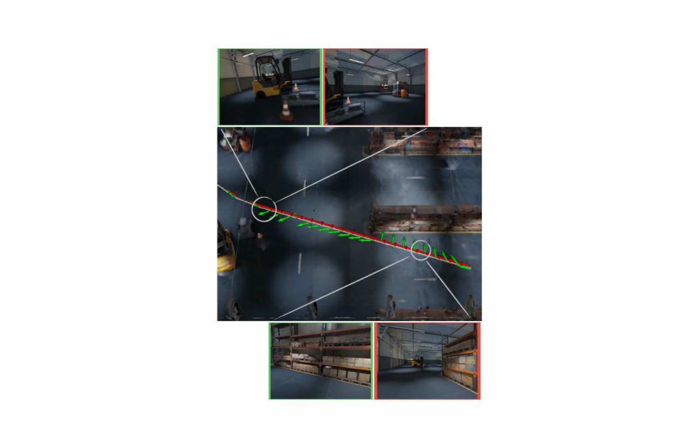
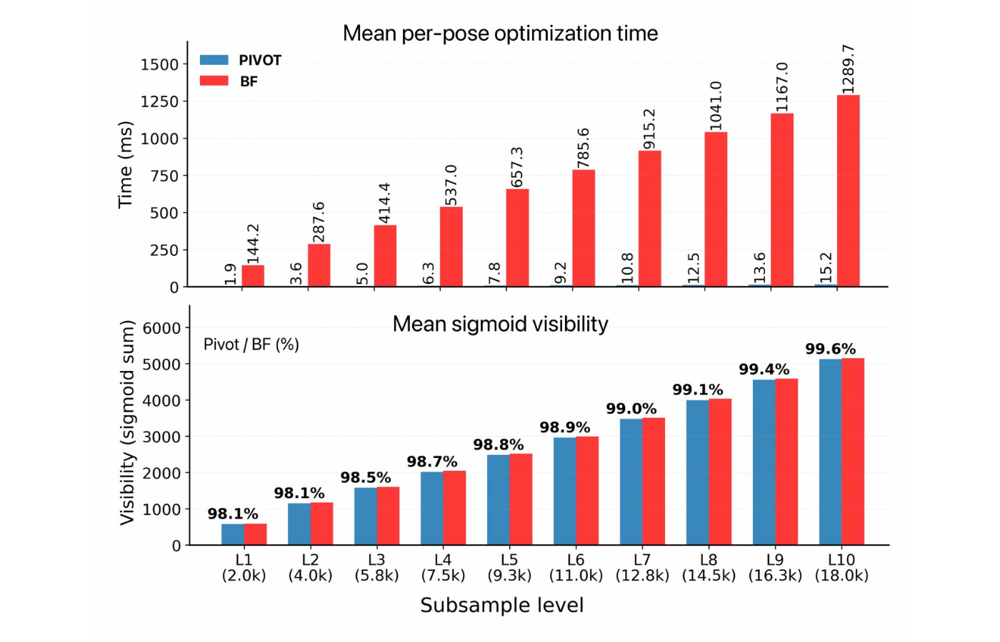
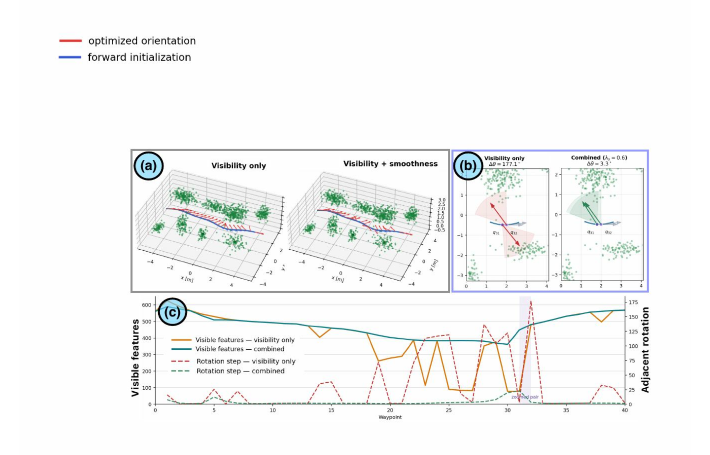
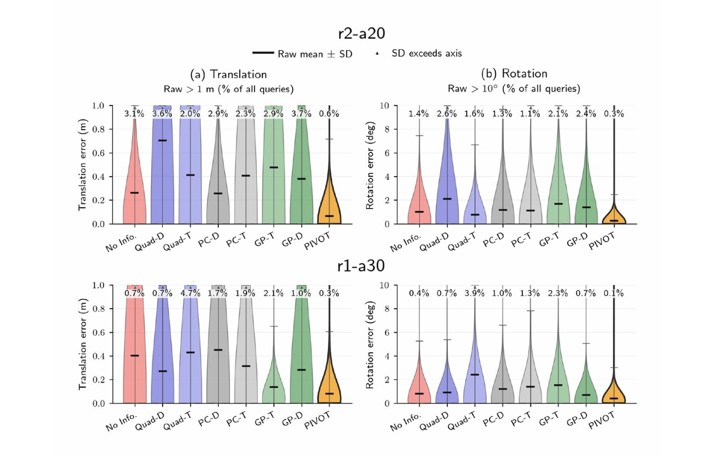
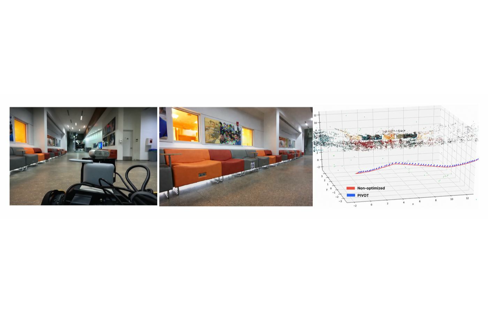
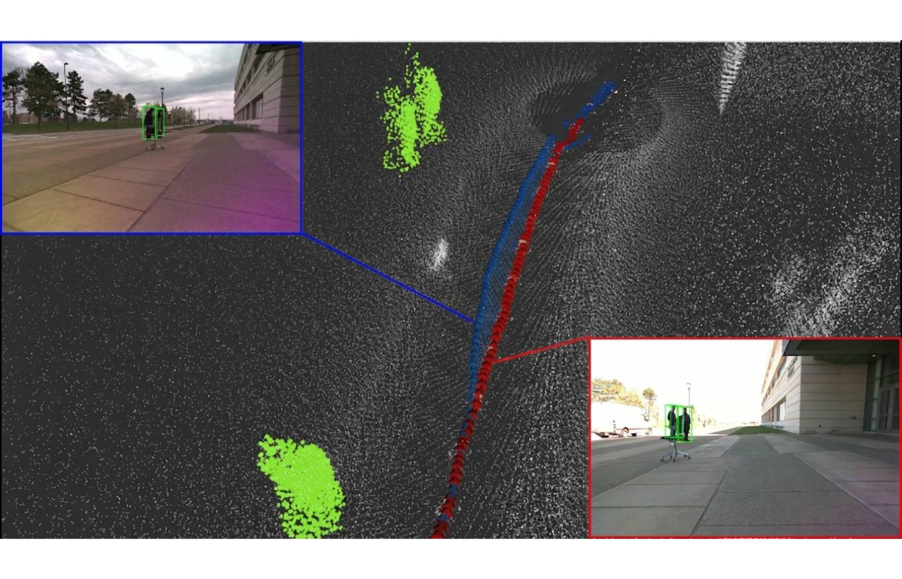

Preprint · Submitted to IEEE Robotics and Automation Letters (RA-L)
Most perception-aware planning assumes the sensor points where the robot body points. That assumption is unnecessary for gimbal cameras, pan-tilt units, and other motion-decoupled sensors whose sensing direction can be controlled independently.
PIVOT treats sensor pointing as a lightweight online optimization problem. Given a fixed translation trajectory and a 3D map of task-relevant landmarks, it chooses the optical-axis direction that maximizes feature visibility while encouraging smooth changes between neighboring viewpoints.
Under a conical field-of-view model, the objective depends only on the optical axis, reducing the problem to two degrees of freedom on the viewing sphere S2. PIVOT computes a differentiable visibility gradient and applies coordinate-free SO(3) exponential-map updates, avoiding explicit yaw/pitch parameterizations and exhaustive search over discretized viewing directions.

For each waypoint, PIVOT scores 3D landmarks with a smooth approximation of whether they lie inside the camera FoV. The gradient rotates the optical axis toward feature-rich structure. At trajectory level, a neighboring-view alignment term discourages abrupt sensor motion and promotes temporal view overlap.
Formulates viewpoint control for motion-decoupled sensors separately from robot translation planning.
Derives a smooth feature-visibility objective and applies SO(3) exponential-map updates without explicit angular parameterization.
Extends single-pose optimization with a smoothness objective for continuous sensor pointing and temporal view overlap.
Evaluates visibility, computational cost, visual localization, and physical gimbal control on a quadruped robot.

Across maps containing roughly 2k-18k features, PIVOT stays close to exhaustive viewing-sphere search while scaling much more favorably with map density.

Adding the trajectory smoothness term suppresses abrupt switches between competing feature clusters. At the highlighted waypoint pair, adjacent-view rotation drops from 177.1° to 3.3° while largely preserving the visibility profile.

| Map | PIVOT registration failure | Next-best evaluated baseline | PIVOT total compute |
|---|---|---|---|
| r1-a30 | 29.6% | 41.0% | 0.045 s |
| r2-a20 | 2.4% | 4.4% | 0.061 s |
PIVOT achieves the lowest mean translation and rotation error among the evaluated methods, with total computation far below the Fisher-information planning baselines used in the study.

On a Boston Dynamics Spot equipped with a pan-tilt camera, PIVOT tracks optimized viewing directions along the same nominal Autowalk route used by a forward-facing baseline.
PIVOT: 416 / 420 frames registered (99.0%)
Forward-facing: 296 / 420 frames registered (70.5%)
That is a 28.6 percentage-point increase in successful COLMAP registration on the evaluated indoor route.

Outdoor demonstration: task-relevant 3D regions corresponding to standing people are supplied to PIVOT, which physically tracks the resulting viewing-direction trajectory while the robot moves.
@misc{chen2026pivot,
title = {PIVOT: Perception-aware Independent Viewpoint Online Optimization},
author = {Yuyang Chen and Shekoufeh Sadeghi and Charuvahan Adhivarahan and Elton Lemos and Chen Wang and Sanjeev J. Koppal and Karthik Dantu},
year = {2026},
eprint = {2609.19510},
archivePrefix = {arXiv},
primaryClass = {cs.RO}
}